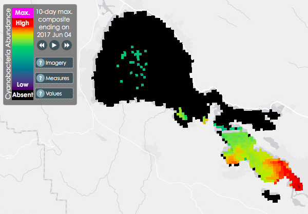
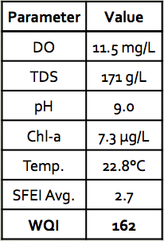
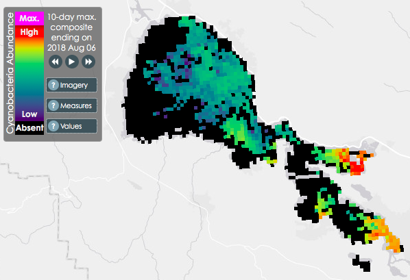
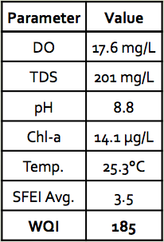

Water Quality Index (WQI)
The Water Quality Index is a tool developed by our team that provides a measure of harmful algal bloom risks in Clear Lake. This value was created through the analysis of historical water quality data, including total dissolved solids, water temperature, pH, chlorophyll-a, dissolved oxygen and the Cyano Index from the SFEI Harmful Algal Bloom Analysis Tool. The resulting Water Quality Index is shown below:

A linear relationship between relative algal bloom risk and the water quality parameters described above was assumed in order to develop the WQI. Each parameter was given a weighting factor depending on how strongly it correlates to algal blooms. For example, temperature and dissolved oxygen were given the highest weighting factors while total dissolved solids was given the smallest. Below are two examples of WQI analyses performed on historical data taken two weeks before an algal bloom event:
June 5, 2017 — JB Station

August 7, 2018 — BP Station
